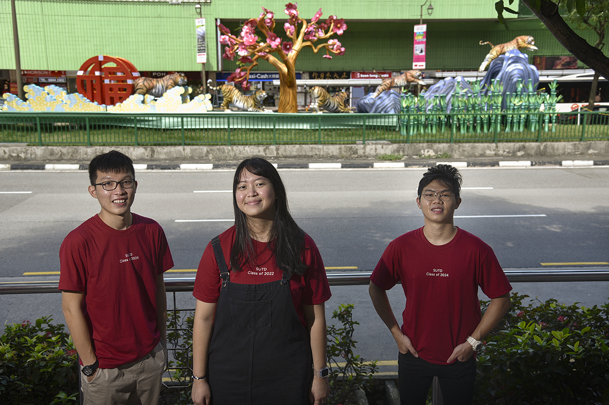

Leon Puah

Summary
Hi there, I am a final-year undergraduate from the Singapore University of Technology and Design! I am driven to understand how we can harness the power of simulation, machine learning and artificial intelligence to better design, analyze, and optimize large-scale transportation systems, urban cities, and supply chain networks ✈️
Education
Singapore University of Technology and Design
Sep 2020 - May 2024
- Bachelor of Engineering (Engineering Systems and Design)
- Specialization in Business Analytics and Operations Research, Minor in Social Science and Technology Studies
- GPA 4.38/5.0 | SBF Foundation Scholarship | SUTD Honors List for Sophomore and Junior Years
University of California, Berkeley
Jun 2023 - Aug 2023
- Global Leadership Programme under UC Berkeley Summer Session
- DEMOG 180 Social Networks
- LDARCH 12 Environmental Science for Sustainable Development
Aalto University, Finland
Aug 2022 - Dec 2022
- Global Exchange Programme under Aalto University's School of Computer Science
- Courses on Simulation Modelling, Machine Learning, Digital Health, Human Computer Interaction and Forest Sustainability
- KKH Global Exchange Award 2022
Work Experiences
Ernst & Young (EY) Global Consulting Services, Singapore
Business Consulting (Supply Chain Operations) Intern
Jan 2023 - May 2023
- Worked with a team of senior consultants and partners to develop a streamlined indirect procurement process for a Japan�based multinational cosmetics company. Organized workshop and gained successful buy-in from senior management
MEXC Global Crypto Exchange, Singapore
Public Relations Intern
May 2021 - Aug 2021
- Pioneered Xpedition, an educational campaign to raise awareness towards blockchain and crypto. Collaborated with
international FinTech partners (BSC Station, Gala Games, etc) to launch CryptoTalk, gaining 50,000+ views on YouTube
- Analyzed daily active user (DAU) and user's trading volume in relation to market movements and utilized SWOT analysis to
guide business development and marketing strategies geared towards increasing global outreach
Defence Science and Technology Agency (DSTA), Singapore
Enterprise IT (UI/UX) Intern
Jan 2020 - Apr 2020
- Conducted ideation, user research with SAF Medical Corps personnel, and delivered a written report on key findings
- Worked closely with UI team to iteratively develop wireframes and mockups on Adobe XD for integration into OneNS app
Academic Projects
Social Network Modelling and Simulation Project
- Utilised the Copenhagen Network dataset to conduct a Network Study project using Python's NetworkX and Pandas to model Bluetooth connections as proxies for social interactions to simulate and evaluate pandemic mitigation policies
Manufacturing and Service Operations, Systems Architecture Project
- Led a team of four to create an online educational game on RShiny with AWS database integration using SQL to aid business
analysts in designing, operating, and optimizing manufacturing trans-border import shipments using the (Q, r) model
Data Analytics and Visualization Industry Project for Health Promotion Board
- Employed R programming to automate data cleaning on datasets provided by HPB, saving over 20 man-hours monthly
- Created compelling dashboard visualizations using PowerBI and conducted statistical analysis to uncover significant insights and lapses in the current state of pre-schools in meeting Healthy Pre-School accreditation guidelines
Chinatown CNY Light Up 2022 for Kreta Ayer Community Club
- Collaborated with 10 SUTD undergraduatesto conceptualize the design of over 880m of Chinese New Year lantern installations
at Eu Tong Sen Street and South Bridge Road for the Year of the Water Tiger, receiving national media coverage

Additional Information
- Programming Proficiency: Excel, SQL, R, RShiny, Python, HTML5, CSS, JavaScript, Julia, Mathematica
- Digital Design Competencies: Rhino 6, Fusion360, Figma, Adobe Illustrator, Photoshop, Premiere Pro, InDesign, XD, PowerBI
- LinkedIn